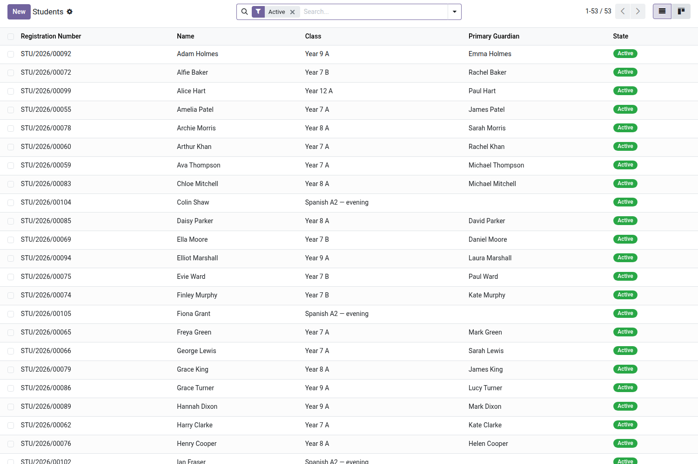
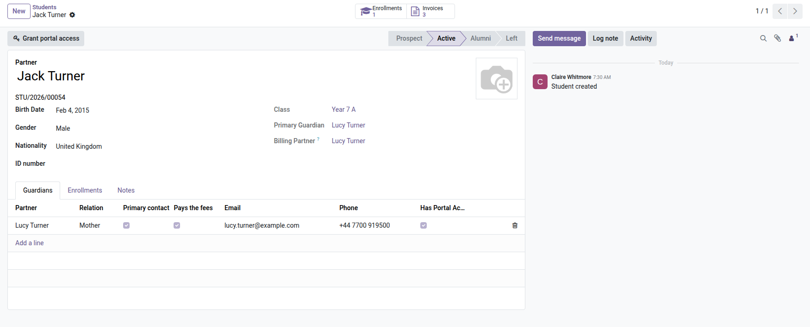
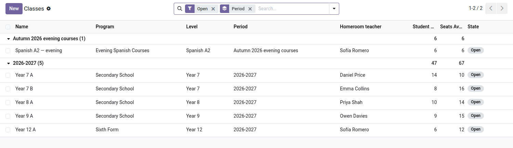
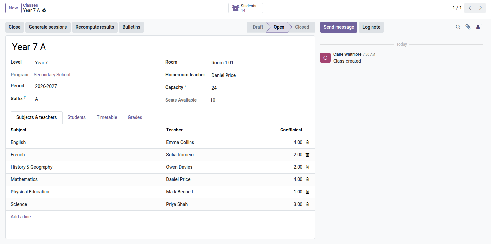
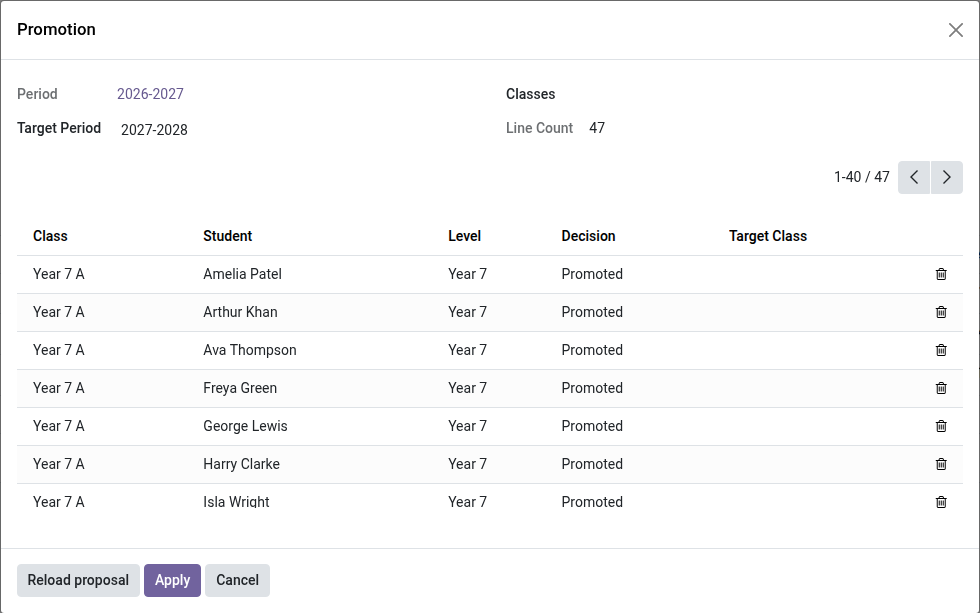
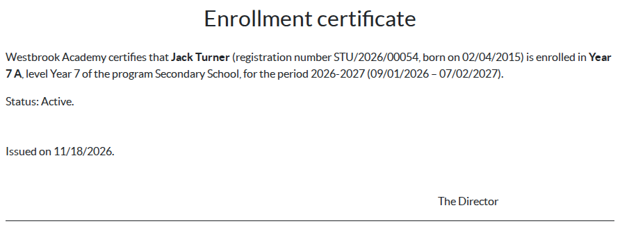

School — students, classes, enrollments
Run a private school in Odoo Community: the year, programs and classes, students and their guardians, teachers, enrollments with seat control and year-end promotion in a single wizard — for primary, middle school, high school, higher education, a language center or a training center.
A private school lives in spreadsheets: one sheet per class, another for parents, a third for payments — and at every new school year, everything is copied over by hand. Who is enrolled where, are there seats left in Grade 6A, which parent should be notified, who moves up to the next grade? Odoo can manage contacts, invoices and documents, but it knows nothing about students, classes or the school year. This module teaches it.
What it brings
- 🏫 One core for every type of school — each program carries its cycle (primary, middle school, high school, higher education, languages, vocational training) and inherits the right settings from it: school year or short session, promotion by level, by credits or manual.
- 📅 Periods and terms — year, semester or session; a wizard generates the terms; a year's structure is duplicated to the next one in one click.
- 👨👩👧 Students and guardians — automatic student ID, student record with photo, dates, nationality; guardians with relationship, main contact and fee payer; everything builds on Odoo contacts.
- 🪑 Enrollments with seat control — capacity per class, remaining seats computed, refusal when the class is full (override possible), withdrawal with a reason, guardian required depending on the program (enabled by default for primary, middle school and high school).
- 🔁 Year-end promotion in one wizard — proposes promoted / repeating / left for a whole period, target class found automatically, decision editable line by line before applying.
- 👩🏫 Teachers and subjects — homeroom teacher per class, subject by subject with a coefficient; a teacher sees only their own classes.
- 📄 Two ready-made documents — enrollment certificate and class list as PDF.
- 🔒 Three roles and multi-company — teacher, administrative office, management; each school in a group sees only its own data.
In pictures
1. Every student at a glance
Registration number, current class, primary guardian and status for the whole school, searchable and filterable.

2. One record per student, with the family
Guardians with their role (primary contact, who pays the fees), enrollments and notes on a single form, with its history.

3. Classes by period, seats left included
Each class shows its program, level, homeroom teacher, head count and remaining seats, grouped by school year or session.

4. Subjects and teachers of a class
Each subject has its teacher and coefficient; capacity, room and homeroom teacher sit on the same form.

5. End-of-year promotion in one pass
The wizard proposes a decision for each student towards the next period; review it, adjust a line, apply.

6. Enrollment certificate, ready to print
Issued from the enrollment for active or completed students, with the school's name, the class and the period.

Why adopt it
- Open source, with no limit on students or classes, on Odoo Community.
- Students and guardians are Odoo contacts: invoices, emails and documents plug into them naturally.
- Designed as a foundation: the paid modules of the suite build on it without modifying it.
- Ships with demo data (a middle school, a computer science bachelor's degree, evening English classes) and a complete French translation.
Core of the School suite
Extend this open-source core with Parent Portal, Admissions (applications and online enrollment), Tuition Fees (payment schedules, invoicing and online payment), Timetable, Attendance, Grades & Reports, Teacher Space, Dashboard and Announcements. Full suite on apps.odooskills.com.
LGPL-3 license — compatible with Odoo 20.0 Community. Support: apps@odooskills.com.